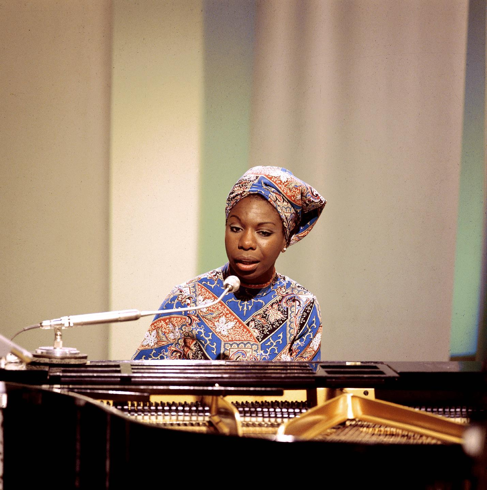

10 best songs of Nina Simone
Love Me or Leave Me
1957, displaying in full her pianistic abilities, a small nod to her dream of becoming a concert pianist.

Ne me quitte pas, Don't leave me
1965, from the famous love ballad Ne me quitte pas by Jacques Brel.
Mississippi Goddam
1963, wrote after Martin Luther King arrest, key figure of the Civil Rights movement.
Composed in honour of Medgar Evers, a civil rights militant killed in 1963 by a member of the Ku Klux Klan
Four Women
1966, revolutionary song, « My skin is brown, my manner is tough »